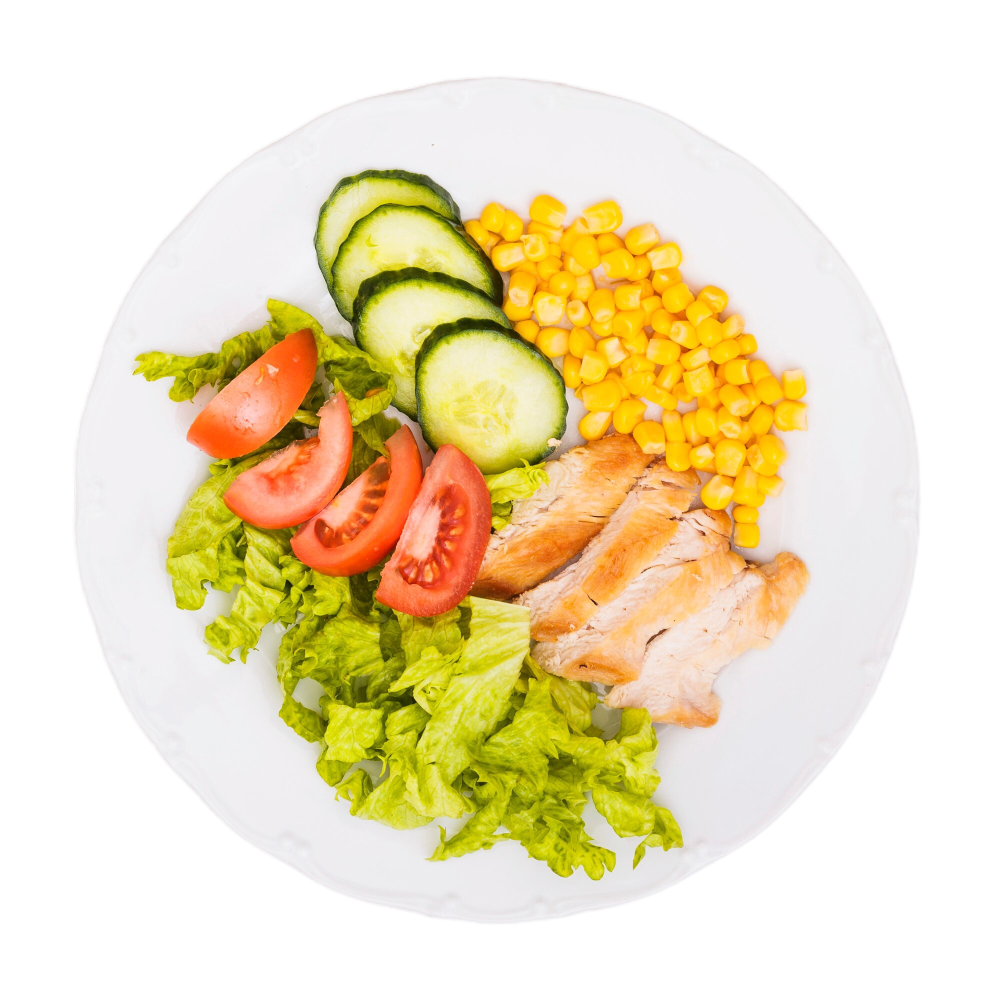

Variasikan konsumsi makanan pokok untuk mencukupi kebutuhan energi.
Batasi konsumsi makanan dan minuman yang tinggi gula, garam, dan lemak
Lakukan aktivitas fisik secara teratur dan pertahankan berat badan ideal.
Pilih lauk pauk yang kaya protein untuk mendukung pertumbuhan dan perkembangan.
Selalu cuci tangan sebelum makan dengan air mengalir dan sabun.
Biasakan sarapan pagi setiap hari.
Konsumsi air putih dalam jumlah cukup.

Perbanyak makan buah dan sayuran segar.
Baca label makanan pada kemasan untuk memahami kandungan gizinya.
Nikmati makanan dengan syukur dan kesadaran akan manfaatnya bagi  tubuh.